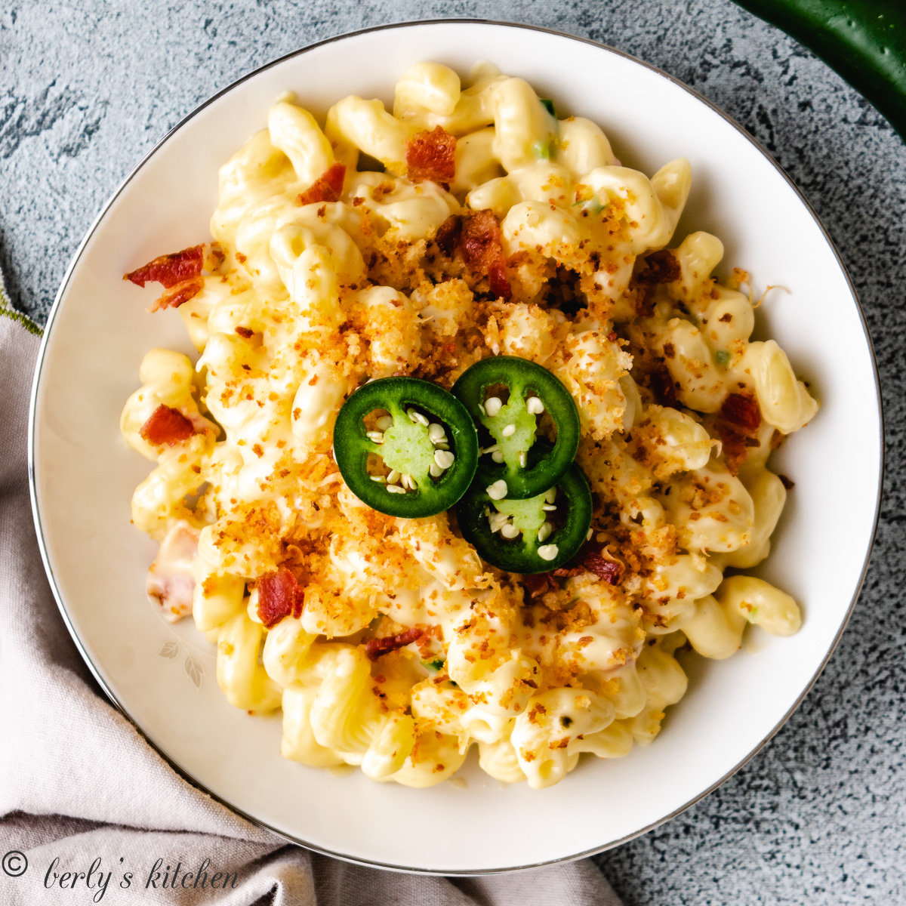

Jalapeno Bacon Mac and Cheese

About the recipe
This mac and cheese recipe has all the intense flavors of a jalapeno popper combined into a delicious, filling pasta!
Ingredients
Option Breadcrumb Topping
- 1 cup panko breadcrumbs
- 2 tbsp unsalted butter
- 1/4 cup parmesan
- 1/4 tsp smoked paprika
Mac and Cheese
- 16 oz. cavatappi noodles
- 4 tbsp unsalted butter
- 4 tbsp all-purpose flour
- 1/2 tsp kosher salt
- 1/2 tsp black pepper
- 2 cups whole milk
- 4 oz. sharp cheddar cheese
- 4 oz. Monterey jack cheese
- 1 large jalapeno
- 6 oz. bacon
Instructions
Breadcrumb Topping
- Place butter and breadcrumbsin a small skillet over low heat. Cook until breadcrumbs become lighly browned and crunchy.
- Remove to a waiting bowl, and stir in cheese and smoked paprika. Set aside.
Mac and Cheese
- Cook the noodles according to package instructions.
- While noodles cook, head a large pan over low-medium heat. Once pan is hot, add butter and melt completely. Next, whisk in the flour, salt and pepper.
Continue to whisk continuously for 2-3 minutes.
- Slowly add the milk and heavy cream while whiskig to combine. Allow the mixture to thicken, and continue to whisk until the liquid begins to steam.
DO NOT LET THE LIQUID BOIL.
- Slowly add in cheese while whisking. After all cheese has been melted, add in the diced jalapeno and the crumbled bacon.
- Top with breadcrumbs and serve hot.